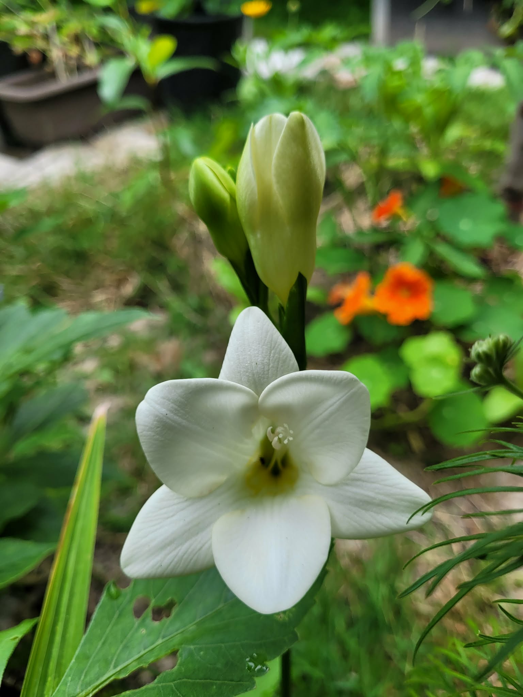
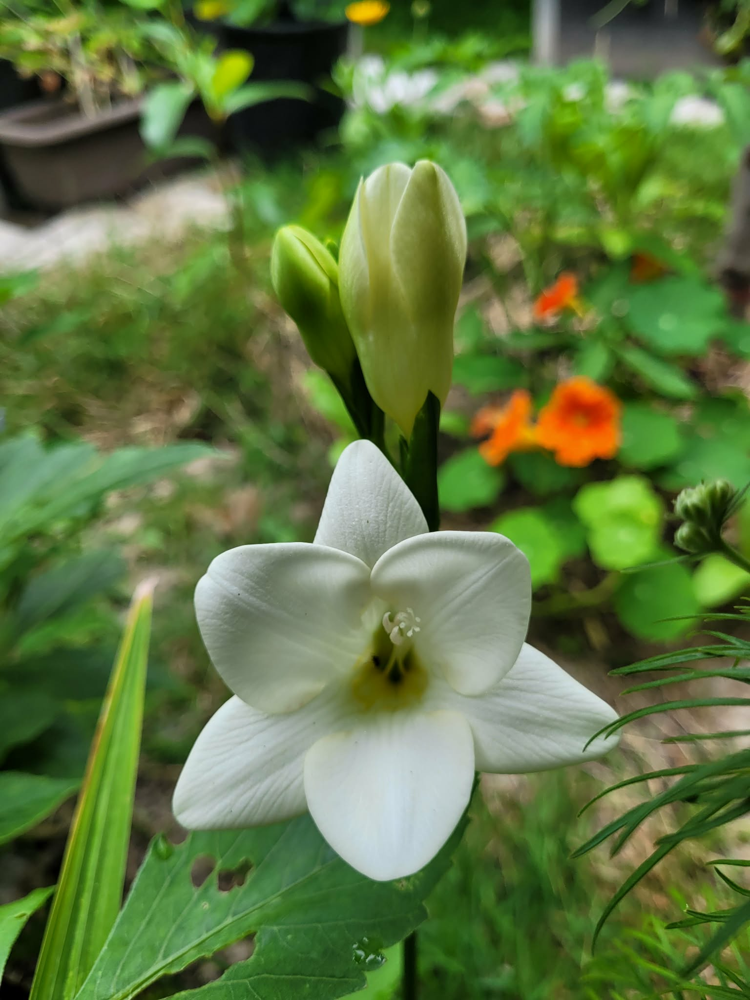

Hobbies
Gardening
 

I like going to gardening stores and supermarkets to pocket fallen plants from the floor. Also love propagating plants from cuttings to sell on facebook marketplace. This year's plant obsession are dahlias and poppies (specifically giant peony poppies). In addition to flowers, I grow chayote, corn, strawberries, blueberries, and other vegetables. I wouldn't recommend growing corn.
Water sports
fig. 1 - Nationals in Welland, Ontario. Colorized. Circa 2023
fig. 2 - Outrigger canoeing at Dragonzone, False Creek
Did this dragonboat thing for almost a decade before I realized it was causing way too many injuries.
Intense physical activity
Just can't sit still I guess. Sometimes I run for the endorphins, and to not go insane. Other times I lift heavy things and put them down again. I hope I can get a 285 deadlift and a sub 45 10k without back pain someday. Not really great at any particular activity, but I enjoy doing pull ups.